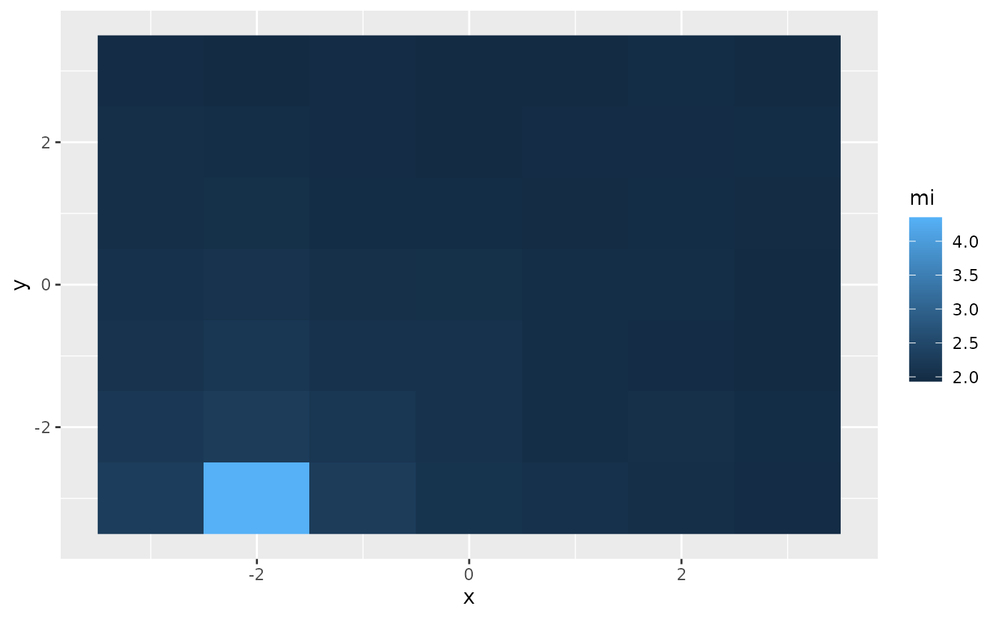
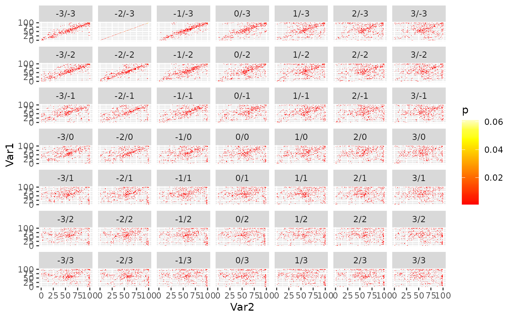

Image to Image Co-Registration based on Mutual Information
Source:R/coregisterImages.R
coregisterImages.RdShifts an image to match a reference image. Matching is based on maximum mutual information.
Usage
coregisterImages(
img,
ref,
shift = 3,
shiftInc = 1,
nSamples = 100,
reportStats = FALSE,
verbose,
nBins = 100,
master = deprecated(),
slave = deprecated(),
...
)Arguments
- img
SpatRaster. Image to shift to match reference image.
imgandrefmust have equal numbers of bands.- ref
SpatRaster. Reference image.
imgandrefmust have equal numbers of bands.- shift
Numeric or matrix. If numeric, then shift is the maximal absolute radius (in pixels of
imgresolution) whichimgis shifted (seq(-shift, shift, by=shiftInc)). If shift is a matrix it must have two columns (x shift and y shift), then only these shift values will be tested.- shiftInc
Numeric. Shift increment (in pixels, but not restricted to integer). Ignored if
shiftis a matrix.- nSamples
Integer. Number of samples to calculate mutual information.
- reportStats
Logical. If
FALSEit will return only the shifted images. Otherwise it will return the shifted image in a list containing stats such as mutual information per shift and joint histograms.- verbose
Logical. Print status messages. Overrides global RStoolbox.verbose option.
- nBins
Integer. Number of bins to calculate joint histogram.
- master
DEPRECATED! Argument was renamed. Please use
reffrom now on.- slave
DEPRECATED! Argument was renamed. Please use
imgfrom now on.- ...
further arguments passed to
writeRaster.
Value
reportStats=FALSE returns a SpatRaster (x-y shifted image).
reportStats=TRUE returns a list containing a data.frame with mutual information per shift ($MI), the shift of maximum MI ($bestShift),
the joint histograms per shift in a list ($jointHist) and the shifted image ($coregImg).
Details
Currently only a simple linear x - y shift is considered and tested. No higher order shifts (e.g. rotation, non-linear transformation) are performed. This means that your imagery should already be properly geometrically corrected.
Mutual information is a similarity metric originating from information theory. Roughly speaking, the higher the mutual information of two data-sets, the higher is their shared information content, i.e. their similarity. When two images are exactly co-registered their mutual information is maximal. By trying different image shifts, we aim to find the best overlap which maximises the mutual information.
Examples
library(terra)
library(ggplot2)
library(reshape2)
reference <- rlogo
## Shift reference 2 pixels to the right and 3 up
missreg <- shift(reference, 2, 3)
## Compare shift
p <- ggR(reference, sat = 1, alpha = .5)
p + ggR(missreg, sat = 1, hue = .5, alpha = 0.5, ggLayer=TRUE)
## Coregister images (and report statistics)
coreg <- coregisterImages(missreg, ref = reference,
nSamples = 500, reportStats = TRUE)
## Plot mutual information per shift
ggplot(coreg$MI) + geom_raster(aes(x,y,fill=mi))

## Plot joint histograms per shift (x/y shift in facet labels)
# \donttest{
df <- melt(coreg$jointHist)
df$L1 <- factor(df$L1, levels = names(coreg$jointHist))
df[df$value == 0, "value"] <- NA ## don't display p = 0
ggplot(df) + geom_raster(aes(x = Var2, y = Var1,fill=value)) + facet_wrap(~L1) +
scale_fill_gradientn(name = "p", colours = heat.colors(10), na.value = NA)
#> Warning: Removed 443028 rows containing missing values or values outside the scale range
#> (`geom_raster()`).

# }
## Compare correction
ggR(reference, sat = 1, alpha = .5) +
ggR(coreg$coregImg, sat = 1, hue = .5, alpha = 0.5, ggLayer=TRUE)